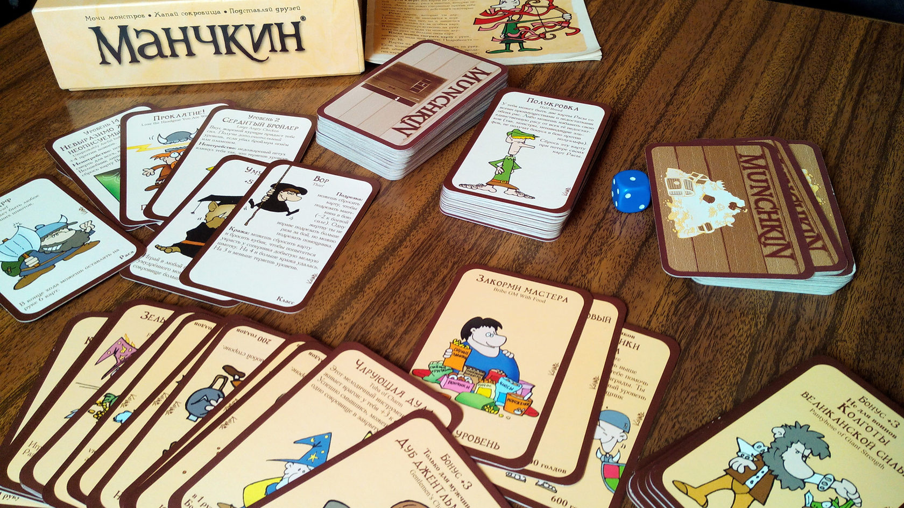

Munchkin (Манчкин)
Тип: карточная игра-пародия на RPG
Игроков: 3–6 человек
Время партии: 30–120 минут
Возраст: от 10–12 лет
Сложность: низкая (правила объясняются за 5 минут)
Состав комплекта
В коробке находится всё необходимое для игры:
- 168 игровых карт (разделённых на две колоды: «Двери» и «Сокровища»);
- 1 шестигранный кубик;
- подробные правила игры.
Правила и механика
Цель игры — первым прокачать своего персонажа до 10-го уровня. Все начинают с 1-го уровня и повышают его, побеждая монстров, используя карты или продавая снаряжение.
- Выбить дверь. Вы берёте карту из колоды «Двери» и переворачиваете её. Там может оказаться монстр, проклятие, раса, класс или бонус.
- Бой или Поиск неприятностей. Если выпал монстр, вам придётся сражаться. Если монстра нет, вы можете сыграть карту монстра из своей руки, чтобы «Поискать неприятности».
- Бой. Сравните свой уровень (с учётом бонусов от экипировки) с уровнем монстра. При победе вы получаете уровни и сокровища. При поражении вы можете попросить помощи у другого игрока (предложив ему долю сокровищ) или попытаться «Смыться», бросив кубик. Если сбежать не удалось, вы получаете штрафы.
- Получение сокровищ. После успешного боя или если вы не встретили монстра, вы берёте карты из колоды «Сокровища».
Главная фишка: «Подстава»
- Помощь: В бою помочь может только один игрок, и обычно за долю сокровищ.
- Вред: Мешать могут все остальные, усиливая монстра или ослабляя вас. Чем ближе игрок к победе, тем сильнее искушение ему помешать.
- Виды карт: «Двери» (монстры, расы, классы) и «Сокровища» (экипировка, зелья, бонусы).
Конец игры
Игра заканчивается сразу же, как только один из игроков достигает 10-го уровня. Побеждает самый хитрый и удачливый «манчкин».